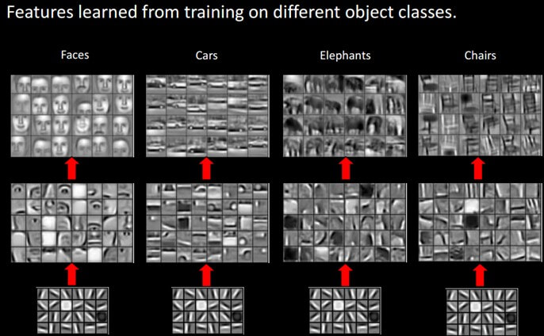

<!DOCTYPE html>
<html lang="en">

<!-- Head tag (contains Google-Analytics、Baidu-Tongji)-->
<head>
  <!-- Google Analytics -->
  
  <!-- Global site tag (gtag.js) - Google Analytics -->
  <script async="async" src="https://www.googletagmanager.com/gtag/js?id=UA-xxxxxx-xx"></script>
  <script type="text/javascript">
    window.dataLayer = window.dataLayer || [];

    function gtag() {
      dataLayer.push(arguments);
    }
    gtag('js', new Date());

    gtag('config', 'UA-xxxxxx-xx');
  </script>
  

  <!-- Baidu Tongji -->
  
    <script>
      var _hmt = _hmt || [];
      (function() {
        var hm = document.createElement("script");
        hm.src = "https://hm.baidu.com/hm.js?519fec21aa0b4882bf3a02e94e19fb08";
        var s = document.getElementsByTagName("script")[0]; 
        s.parentNode.insertBefore(hm, s);
      })();
      </script>
  

  <!-- Baidu Push -->
  
  <script>
    (function() {
      var bp = document.createElement('script');
      var curProtocol = window.location.protocol.split(':')[0];
      if (curProtocol === 'https') {
        bp.src = 'https://zz.bdstatic.com/linksubmit/push.js';
      } else {
        bp.src = 'http://push.zhanzhang.baidu.com/push.js';
      }
      var s = document.getElementsByTagName("script")[0];
      s.parentNode.insertBefore(bp, s);
    })();
  </script>
  

  <meta charset="utf-8" />
  <meta http-equiv="X-UA-Compatible" content="IE=edge" />

  <meta name="google-site-verification" content="lxDfCplOZbIzjhG34NuQBgu2gdyRlAtMB4utP5AgEBc" />
  <meta name="baidu-site-verification" content="code-mzpq2jewpV" />

  <meta name="viewport" content="width=device-width, initial-scale=1" />
  <meta name="description" content="It&#39;s an IT blog..." />
  <meta name="keyword" content="LemonSqi,LemonD.K.,livemylife,IT  blog,Blog" />
  <link rel="shortcut icon" href="/img/avatar/avatar.jpg" />

  <!-- Place this tag in your head or just before your close body tag. -->
  <script async="async" defer="defer" src="https://buttons.github.io/buttons.js"></script>
  <!-- Bootstrap Core CSS -->
  <link rel="stylesheet" href="/css/bootstrap.min.css" />

  <!-- Custom CSS -->
  <link rel="stylesheet" href="/css/beantech.min.css" />

  <!-- Pygments Highlight CSS -->
  
<link rel="stylesheet" href="../../../../css/highlight.css">
<link rel="stylesheet" href="../../../../css/widget.css">
<link rel="stylesheet" href="../../../../css/rocket.css">
<link rel="stylesheet" href="../../../../css/signature.css">
<link rel="stylesheet" href="../../../../css/catalog.css">
<link rel="stylesheet" href="../../../../css/livemylife.css">


  
  <!-- wave start -->
  <link rel="stylesheet" href="/css/wave.css" />
  <!-- wave end -->
  

  
  <!-- top start (article top hot config) -->
  <link rel="stylesheet" href="/css/top.css" />
  <!-- top end -->
  

  
  <!-- ThemeColor start -->
  <link rel="stylesheet" href="/css/scroll.css" />
  <!-- ThemeColor end -->
  

  
  <!-- viewer start (Picture preview) -->
  <link rel="stylesheet" href="/css/viewer.min.css" />
  <!-- viewer end -->
  

  
  <!-- Search start -->
  <link rel="stylesheet" href="/css/search.css" />
  <!-- Search end -->
  

  
  <!-- ThemeColor start -->
  <link rel="stylesheet" href="/css/themecolor.css" />
  <!-- ThemeColor end -->
  

  

  
  <!-- gitalk start -->
  <!-- <link rel="stylesheet" href="https://cdn.jsdelivr.net/npm/gitalk@1/dist/gitalk.css"> -->
  <link rel="stylesheet" href="/css/gitalk.css" />
  <!-- gitalk end -->
  

  <!-- Custom Fonts -->
  <!-- <link href="https://maxcdn.bootstrapcdn.com/font-awesome/4.3.0/css/font-awesome.min.css" rel="stylesheet" type="text/css"> -->
  <!-- Hux change font-awesome CDN to qiniu -->
  <link rel="stylesheet" href="https://cdn.staticfile.org/font-awesome/4.5.0/css/font-awesome.min.css" type="text/css">
  <link href="https://fonts.googleapis.com/icon?family=Material+Icons" rel="stylesheet">

  <!-- Hux Delete, sad but pending in China <link href='http://fonts.googleapis.com/css?family=Lora:400,700,400italic,700italic' rel='stylesheet' type='text/css'> <link
    href='http://fonts.googleapis.com/css?family=Open+Sans:300italic,400italic,600italic,700italic,800italic,400,300,600,700,800' rel='stylesheet' type='text/ css'> -->

  <!-- HTML5 Shim and Respond.js IE8 support of HTML5 elements and media queries -->
  <!-- WARNING: Respond.js doesn't work if you view the page via file:// -->
  <!--[if lt IE 9]> <script src="https://oss.maxcdn.com/libs/html5shiv/3.7.0/html5shiv.js"></script> <script src="https://oss.maxcdn.com/libs/respond.js/1.4.2/respond.min.js"></script> <![endif]-->

  <!-- ga & ba script hoook -->
  <link rel="canonical" href="http://lemonsqi.top/2021/06/03/10_CNN/">
  <title>
    
    卷积神经网络 – CNN - LemonD.K.
    
  </title>
<meta name="generator" content="Hexo 4.2.1"></head>


<!-- hack iOS CSS :active style -->

<body ontouchstart="" class="body--home">
	<!-- ThemeColor -->
	
	<!-- ThemeColor -->
<!-- <div class="toggle" onclick="document.body.classList.toggle('body--dark')">Switch Color</div> -->

<div class="toggle" onclick="document.body.classList.toggle('body--dark')">
  <i class="mdui-icon material-icons bright-mode"></i>
  <i class="mdui-icon material-icons dark-mode"></i>
</div>

	

	<!-- Gitter -->
	
	<!-- Gitter -->
<!-- Docs:https://gitter.im/?utm_source=left-menu-logo -->
<script>
  ((window.gitter = {}).chat = {}).options = {
    room: 'LemonSqi/community'
  };
</script>
<script src="https://sidecar.gitter.im/dist/sidecar.v1.js" async defer></script>

	

	<!-- Navigation (contains search)-->
	<!-- Navigation -->
<nav class="navbar navbar-default navbar-custom navbar-fixed-top">
  <div class="container-fluid">
    <!-- Brand and toggle get grouped for better mobile display -->
    <div class="navbar-header page-scroll">
      <button type="button" class="navbar-toggle">
        <span class="sr-only">Toggle navigation</span>
        <span class="icon-bar"></span>
        <span class="icon-bar"></span>
        <span class="icon-bar"></span>
      </button>
      <a class="navbar-brand" href="/">Live My Life</a>
    </div>

    <!-- Collect the nav links, forms, and other content for toggling -->
    <!-- Known Issue, found by Hux:
            <nav>'s height woule be hold on by its content.
            so, when navbar scale out, the <nav> will cover tags.
            also mask any touch event of tags, unfortunately.
        -->
    <div id="huxblog_navbar">
      <div class="navbar-collapse">
        <ul class="nav navbar-nav navbar-right">
          <li>
            <a href="/">Home</a>
          </li>

          

          
          

          
          <li>
            <a href="/about/">About</a>
          </li>
          
          

          
          <li>
            <a href="/archive/">Archives</a>
          </li>
          
          

          
          <li>
            <a href="/categories/">Categories</a>
          </li>
          
          

          
          <li>
            <a href="/tags/">Tags</a>
          </li>
          
          

          
          <li><a class="popup-trigger" title="Search"><span class="search-icon"></span>Search</a></li>
          
        </ul>
      </div>
    </div>
    <!-- /.navbar-collapse -->
  </div>
  <!-- /.container -->
</nav>
<!-- progress -->
<div id="progress">
  <div class="line" style="width: 0%;"></div>
</div>


<script>
  // Drop Bootstarp low-performance Navbar
  // Use customize navbar with high-quality material design animation
  // in high-perf jank-free CSS3 implementation
  var $body = document.body;
  var $toggle = document.querySelector('.navbar-toggle');
  var $navbar = document.querySelector('#huxblog_navbar');
  var $collapse = document.querySelector('.navbar-collapse');

  $toggle.addEventListener('click', handleMagic)

  function handleMagic(e) {
    if ($navbar.className.indexOf('in') > 0) {
      // CLOSE
      $navbar.className = " ";
      // wait until animation end.
      setTimeout(function() {
        // prevent frequently toggle
        if ($navbar.className.indexOf('in') < 0) {
          $collapse.style.height = "0px"
        }
      }, 400)
    } else {
      // OPEN
      $collapse.style.height = "auto"
      $navbar.className += " in";
    }
  }
</script>


	<!-- Post Header (contains intro-header、signature、wordcount、busuanzi、waveoverlay) -->
	<!-- Modified by Yu-Hsuan Yen -->
<!-- Post Header -->

  <style type="text/css">
    header.intro-header {
       /*post*/
        background-image: url('/img/blog/3.jpg');
      
    }

    
      #signature {/*signature*/
        background-image: url('/img/signature/vincent-white.png');
      }
    
  </style>


<header class="intro-header">
  <!-- Signature -->
  <div id="signature">
    <div class="container">
      <div class="row">
        <div class="col-lg-8 col-lg-offset-2 col-md-10 col-md-offset-1">
          
          <div class="post-heading">
            <div class="tags">
              
              <a class="tag" href="/tags/#深度学习" title="深度学习">深度学习</a>
              
              <a class="tag" href="/tags/#CNN" title="CNN">CNN</a>
              
              <a class="tag" href="/tags/#人工智能" title="人工智能">人工智能</a>
              
            </div>
            <h1>卷积神经网络 – CNN</h1>
            <h2 class="subheading">Convolutional neural network</h2>
            <span class="meta">
              Posted by sqwang on
              2021-06-03
            </span>


            
            <!-- WordCount start -->
            <div class="blank_box"></div>
            <span class="meta">
              Estimated Reading Time <span class="post-count">8</span> Minutes
            </span>
            <div class="blank_box"></div>
            <span class="meta">
              Words <span class="post-count">2.4k</span> In Total
            </span>
            <div class="blank_box"></div>
            <!-- WordCount end -->
            
            
            <!-- 不蒜子统计 start -->
            <span class="meta" id="busuanzi_container_page_pv">
              Viewed <span id="busuanzi_value_page_pv"><i class="fa fa-spinner fa-spin"></i></span> Times
            </span>
            <!-- 不蒜子统计 end -->
            


          </div>
          
        </div>
      </div>
    </div>
  </div>

  
  <!-- waveoverlay start -->
  <div class="preview-overlay">
    <svg class="preview-waves" xmlns="http://www.w3.org/2000/svg" xmlns:xlink="http://www.w3.org/1999/xlink" viewBox="0 24 150 28" preserveAspectRatio="none" shape-rendering="auto">
      <defs>
        <path id="gentle-wave" d="M-160 44c30 0 58-18 88-18s 58 18 88 18 58-18 88-18 58 18 88 18 v44h-352z"></path>
      </defs>
      <g class="preview-parallax">
        <use xlink:href="#gentle-wave" x="48" y="0" fill=var(--gentle-wave1)></use>
        <use xlink:href="#gentle-wave" x="48" y="3" fill=var(--gentle-wave2)></use>
        <use xlink:href="#gentle-wave" x="48" y="5" fill=var(--gentle-wave3)></use>
        <use xlink:href="#gentle-wave" x="48" y="7" fill=var(--gentle-wave)></use>
      </g>
    </svg>
  </div>
  <!-- waveoverlay end -->
  

</header>


	<!-- Main Content (Post contains
	Pager、
	tip、
	socialshare、
	gitalk、gitment、disqus-comment、
	Catalog、
	Sidebar、
	Featured-Tags、
	Friends Blog、
	anchorjs、
	) -->
	<!-- Modify by Yu-Hsuan Yen -->
<!-- Post Content -->
<article>
  <div class="container">
    <div class="row">
      <!-- Post Container -->
      <div class="col-lg-8 col-lg-offset-1 col-md-10 col-md-offset-1 post-container">

        <blockquote>
<p>卷积神经网络 – CNN 最擅长的就是图片的处理。它受到人类视觉神经系统的启发。</p>
<p>CNN 有2大特点：</p>
<ol>
<li>能够有效的将大数据量的图片降维成小数据量</li>
<li>能够有效的保留图片特征，符合图片处理的原则</li>
</ol>
<p>目前 CNN 已经得到了广泛的应用，比如：人脸识别、自动驾驶、美图秀秀、安防等很多领域。</p>
</blockquote>
<h2 id="CNN-解决了什么问题？"><a href="#CNN-解决了什么问题？" class="headerlink" title="CNN 解决了什么问题？"></a>CNN 解决了什么问题？</h2><p>在 CNN 出现之前，图像对于人工智能来说是一个难题，有2个原因：</p>
<ol>
<li>图像需要处理的数据量太大，导致成本很高，效率很低</li>
<li>图像在数字化的过程中很难保留原有的特征，导致图像处理的准确率不高</li>
</ol>
<p>下面就详细说明一下这2个问题：</p>
<h3 id="需要处理的数据量太大"><a href="#需要处理的数据量太大" class="headerlink" title="需要处理的数据量太大"></a>需要处理的数据量太大</h3><p>图像是由像素构成的，每个像素又是由颜色构成的。</p>
<p></p>
<p>现在随随便便一张图片都是 1000×1000 像素以上的， 每个像素都有RGB 3个参数来表示颜色信息。</p>
<p>假如我们处理一张 1000×1000 像素的图片，我们就需要处理3百万个参数！</p>
<p>1000×1000×3=3,000,000</p>
<p>这么大量的数据处理起来是非常消耗资源的，而且这只是一张不算太大的图片！</p>
<p><strong>卷积神经网络 – CNN 解决的第一个问题就是「将复杂问题简化」，把大量参数降维成少量参数，再做处理。</strong></p>
<p><strong>更重要的是：我们在大部分场景下，降维并不会影响结果。比如1000像素的图片缩小成200像素，并不影响肉眼认出来图片中是一只猫还是一只狗，机器也是如此。</strong></p>
<h3 id="保留图像特征"><a href="#保留图像特征" class="headerlink" title="保留图像特征"></a>保留图像特征</h3><p>图片数字化的传统方式我们简化一下，就类似下图的过程：</p>
<p></p>
<p>假如有圆形是1，没有圆形是0，那么圆形的位置不同就会产生完全不同的数据表达。但是从视觉的角度来看，<strong>图像的内容（本质）并没有发生变化，只是位置发生了变化</strong>。</p>
<p>所以当我们移动图像中的物体，用传统的方式的得出来的参数会差异很大！这是不符合图像处理的要求的。</p>
<p><strong>而 CNN 解决了这个问题，他用类似视觉的方式保留了图像的特征，当图像做翻转，旋转或者变换位置时，它也能有效的识别出来是类似的图像。</strong></p>
<p>那么卷积神经网络是如何实现的呢？在我们了解 CNN 原理之前，先来看看人类的视觉原理是什么？</p>
<h2 id="人类的视觉原理"><a href="#人类的视觉原理" class="headerlink" title="人类的视觉原理"></a>人类的视觉原理</h2><p>深度学习的许多研究成果，离不开对大脑认知原理的研究，尤其是视觉原理的研究。</p>
<p>1981 年的诺贝尔医学奖，颁发给了 David Hubel（出生于加拿大的美国神经生物学家） 和TorstenWiesel，以及 Roger Sperry。前两位的主要贡献，是“<strong>发现了视觉系统的信息处理</strong>”，可视皮层是分级的。</p>
<p>人类的视觉原理如下：从原始信号摄入开始（瞳孔摄入像素 Pixels），接着做初步处理（大脑皮层某些细胞发现边缘和方向），然后抽象（大脑判定，眼前的物体的形状，是圆形的），然后进一步抽象（大脑进一步判定该物体是只气球）。下面是人脑进行人脸识别的一个示例：</p>
<p></p>
<p>对于不同的物体，人类视觉也是通过这样逐层分级，来进行认知的：</p>
<p></p>
<p>我们可以看到，在最底层特征基本上是类似的，就是各种边缘，越往上，越能提取出此类物体的一些特征（轮子、眼睛、躯干等），到最上层，不同的高级特征最终组合成相应的图像，从而能够让人类准确的区分不同的物体。</p>
<p>那么我们可以很自然的想到：可以不可以模仿人类大脑的这个特点，构造多层的神经网络，较低层的识别初级的图像特征，若干底层特征组成更上一层特征，最终通过多个层级的组合，最终在顶层做出分类呢？</p>
<p><strong>答案是肯定的，这也是许多深度学习算法（包括CNN）的灵感来源。</strong></p>
<h2 id="卷积神经网络-CNN-的基本原理"><a href="#卷积神经网络-CNN-的基本原理" class="headerlink" title="卷积神经网络-CNN 的基本原理"></a>卷积神经网络-CNN 的基本原理</h2><p>典型的 CNN 由3个部分构成：</p>
<ol>
<li>卷积层</li>
<li>池化层</li>
<li>全连接层</li>
</ol>
<p>如果简单来描述的话：</p>
<p>卷积层负责提取图像中的局部特征；池化层用来大幅降低参数量级(降维)；全连接层类似传统神经网络的部分，用来输出想要的结果。</p>
<p></p>
<h3 id="卷积——提取特征"><a href="#卷积——提取特征" class="headerlink" title="卷积——提取特征"></a>卷积——提取特征</h3><p>卷积层的运算过程如下图，用一个卷积核扫完整张图片：</p>
<p></p>
<p>这个过程我们可以理解为我们使用一个过滤器（卷积核）来过滤图像的各个小区域，从而得到这些小区域的特征值。</p>
<p>在具体应用中，往往有多个卷积核，可以认为，每个卷积核代表了一种图像模式，如果某个图像块与此卷积核卷积出的值大，则认为此图像块十分接近于此卷积核。如果我们设计了6个卷积核，可以理解：我们认为这个图像上有6种底层纹理模式，也就是我们用6中基础模式就能描绘出一副图像。以下就是25种不同的卷积核的示例：</p>
<p></p>
<p><strong>总结：卷积层的通过卷积核的过滤提取出图片中局部的特征，跟上面提到的人类视觉的特征提取类似。</strong></p>
<h3 id="池化层（下采样）——数据降维，避免过拟合"><a href="#池化层（下采样）——数据降维，避免过拟合" class="headerlink" title="池化层（下采样）——数据降维，避免过拟合"></a>池化层（下采样）——数据降维，避免过拟合</h3><p>池化层简单说就是下采样，他可以大大降低数据的维度。其过程如下：</p>
<p></p>
<p>上图中，我们可以看到，原始图片是20×20的，我们对其进行下采样，采样窗口为10×10，最终将其下采样成为一个2×2大小的特征图。</p>
<p>之所以这么做的原因，是因为即使做完了卷积，图像仍然很大（因为卷积核比较小），所以为了降低数据维度，就进行下采样。</p>
<p><strong>总结：池化层相比卷积层可以更有效的降低数据维度，这么做不但可以大大减少运算量，还可以有效的避免过拟合。</strong></p>
<h3 id="全连接层——输出结果"><a href="#全连接层——输出结果" class="headerlink" title="全连接层——输出结果"></a>全连接层——输出结果</h3><p>这个部分就是最后一步了，经过卷积层和池化层处理过的数据输入到全连接层，得到最终想要的结果。</p>
<p>经过卷积层和池化层降维过的数据，全连接层才能”跑得动”，不然数据量太大，计算成本高，效率低下。</p>
<p></p>
<p>典型的 CNN 并非只是上面提到的3层结构，而是多层结构，例如 LeNet-5 的结构就如下图所示：</p>
<p><strong>卷积层 – 池化层- 卷积层 – 池化层 – 卷积层 – 全连接层</strong></p>
<p><strong></strong></p>
<p>在了解了 CNN 的基本原理后，重点说一下 CNN 的实际应用有哪些。</p>
<h2 id="CNN-有哪些实际应用？"><a href="#CNN-有哪些实际应用？" class="headerlink" title="CNN 有哪些实际应用？"></a>CNN 有哪些实际应用？</h2><p>卷积神经网络 – CNN 很擅长处理图像。而视频是图像的叠加，所以同样擅长处理视频内容。下面给大家列一些比较成熟的应用：</p>
<p><strong>图像分类、检索</strong></p>
<p>图像分类是比较基础的应用，他可以节省大量的人工成本，将图像进行有效的分类。对于一些特定领域的图片，分类的准确率可以达到 95%+，已经算是一个可用性很高的应用了。</p>
<p>典型场景：图像搜索…</p>
<p></p>
<p><strong>目标定位检测</strong></p>
<p>可以在图像中定位目标，并确定目标的位置及大小。</p>
<p>典型场景：自动驾驶、安防、医疗…</p>
<p></p>
<p><strong>目标分割</strong></p>
<p>简单理解就是一个像素级的分类。</p>
<p>他可以对前景和背景进行像素级的区分、再高级一点还可以识别出目标并且对目标进行分类。</p>
<p>典型场景：美图秀秀、视频后期加工、图像生成…</p>
<p></p>
<p><strong>人脸识别</strong></p>
<p>人脸识别已经是一个非常普及的应用了，在很多领域都有广泛的应用。</p>
<p>典型场景：安防、金融、生活…</p>
<p></p>
<p><strong>骨骼识别</strong></p>
<p>骨骼识别是可以识别身体的关键骨骼，以及追踪骨骼的动作。</p>
<p>典型场景：安防、电影、图像视频生成、游戏…</p>
<p></p>
<h2 id="总结"><a href="#总结" class="headerlink" title="总结"></a>总结</h2><p>上面介绍了 CNN 的价值、基本原理和应用场景，简单总结如下：</p>
<p><strong>CNN 的价值：</strong></p>
<ol>
<li>能够将大数据量的图片有效的降维成小数据量(并不影响结果)</li>
<li>能够保留图片的特征，类似人类的视觉原理</li>
</ol>
<p><strong>CNN 的基本原理：</strong></p>
<ol>
<li>卷积层 – 主要作用是保留图片的特征</li>
<li>池化层 – 主要作用是把数据降维，可以有效的避免过拟合</li>
<li>全连接层 – 根据不同任务输出我们想要的结果</li>
</ol>
<p><strong>CNN 的实际应用：</strong></p>
<ol>
<li>图片分类、检索</li>
<li>目标定位检测</li>
<li>目标分割</li>
<li>人脸识别</li>
<li>骨骼识别</li>
</ol>
<p>​                                                                                                                                        <strong><em>高山仰止 景行行止 虽不能至 心向往之</em></strong></p>


        <hr>
        <!-- Pager -->
        <ul class="pager">
          
          <li class="previous">
            <a href="/2021/06/05/11_RNN/" data-toggle="tooltip" data-placement="top" title="循环神经网络 – RNN">&larr; Previous Post</a>
          </li>
          
          
          <li class="next">
            <a href="/2021/05/31/9_深度学习/" data-toggle="tooltip" data-placement="top" title="深度学习">Next Post &rarr;</a>
          </li>
          
        </ul>

        
        <!-- tip start -->
        <div class="tip">
          <p>
            If you like this blog or find it useful for you, you are welcome to comment on it. You are also welcome to share this blog, so that more people can participate in it!
          </p>
        </div>
        <!-- tip end -->
        

        
        <!-- Sharing Srtart -->
        <!-- Social Social Share Post -->
<!-- Docs:https://github.com/overtrue/share.js -->

<div class="social-share" data-initialized="true" data-disabled="tencent ,douban ,qzone ,linkedin ,facebook ,google ,diandian" data-wechat-qrcode-helper="" align="center">
  <ul class="list-inline text-center social-share-ul">
    <li class="social-share-li">
      <a target="_blank" class="social-share-icon icon-twitter">
        <i class="fa fa-twitter fa-1x" aria-hidden="true"></i>
      </a>
    </li>
    <li class="social-share-li">
      <a class="social-share-icon icon-wechat">
        <i class="fa fa-weixin fa-1x" aria-hidden="true"></i>
      </a>
    </li>
    <li class="social-share-li">
      <a target="_blank" class="social-share-icon icon-weibo">
        <i class="fa fa-weibo fa-1x" aria-hidden="true"></i>
      </a>
    </li>
    <li class="social-share-li">
      <a target="_blank" class="social-share-icon icon-qq">
        <i class="fa fa-qq fa-1x" aria-hidden="true"></i>
      </a>
    </li>
    <li class="social-share-li">
      <a target="_blank" class="social-share-icon" href="mailto:?subject=卷积神经网络 – CNN&body=Hi,I found this website and thought you might like it http://lemonsqi.top/2021/06/03/10_CNN/">
        <i class="fa fa-envelope fa-1x" aria-hidden="true"></i>
      </a>
    </li>
  </ul>
</div>

<!-- css & js -->
<!-- <link rel="stylesheet" href="https://cdnjs.cloudflare.com/ajax/libs/social-share.js/1.0.16/css/share.min.css"> -->
<script defer="defer" async="true" src="https://cdnjs.cloudflare.com/ajax/libs/social-share.js/1.0.16/js/social-share.min.js"></script>

        <!-- Sharing End -->
        
        <hr>

        <!-- comments start -->
        <!-- 0. valine comment -->


<!-- 1. gitalk comment -->

<!-- gitalk start -->
<!-- Docs:https://github.com/gitalk/gitalk/blob/master/readme-cn.md -->

<div id="gitalk-container"></div>

<!-- <script src="https://cdn.jsdelivr.net/npm/gitalk@1/dist/gitalk.js"></script> -->
<script src="/js/comment/gitalk.js"></script>

<script>
  var gitalk = new Gitalk({
    clientID: 'd50f15a1a53dcf7ec506',
    clientSecret: 'bcf577b98b32973c3e363c83264395d715f5ee1d',
    repo: 'gitalk-comment',
    owner: 'LemonSqi',
    admin: 'LemonSqi',
    id: 'Thu Jun 03 2021 22:15:47 GMT+0800', // Ensure uniqueness and length less than 50
    distractionFreeMode: false, // Facebook-like distraction free mode
    perPage: 15 ,
    pagerDirection: 'last',
    createIssueManually: false ,
    language: 'zh-CN',
    proxy: 'https://shielded-brushlands-08810.herokuapp.com/https://github.com/login/oauth/access_token'
  });
  gitalk.render('gitalk-container');

  var gtFolded = () => {
    setTimeout(function() {
      let markdownBody = document.getElementsByClassName("markdown-body");
      let list = Array.from(markdownBody);
      list.forEach(item => {
        if (item.clientHeight > 250) {
          item.classList.add('gt-comment-body-folded');
          item.style.maxHeight = '250px';
          item.title = 'Click to Expand';
          item.onclick = function() {
            item.classList.remove('gt-comment-body-folded');
            item.style.maxHeight = '';
            item.title = '';
            item.onclick = null;
          };
        }
      })
    }, 800);
  }
</script>

<!-- gitalk end -->


<!-- 2. gitment comment -->


<!-- 3. disqus comment -->


        <!-- comments end -->
        <hr>

      </div>

      <!-- Catalog: Tabe of Content -->
      <!-- Table of Contents -->

    
      <aside id="sidebar">
        <div id="toc" class="toc-article">
        <strong class="toc-title">Contents</strong>
        
          <ol class="toc-nav"><li class="toc-nav-item toc-nav-level-2"><a class="toc-nav-link" href="#CNN-解决了什么问题？"><span class="toc-nav-number">1.</span> <span class="toc-nav-text">CNN 解决了什么问题？</span></a><ol class="toc-nav-child"><li class="toc-nav-item toc-nav-level-3"><a class="toc-nav-link" href="#需要处理的数据量太大"><span class="toc-nav-number">1.1.</span> <span class="toc-nav-text">需要处理的数据量太大</span></a></li><li class="toc-nav-item toc-nav-level-3"><a class="toc-nav-link" href="#保留图像特征"><span class="toc-nav-number">1.2.</span> <span class="toc-nav-text">保留图像特征</span></a></li></ol></li><li class="toc-nav-item toc-nav-level-2"><a class="toc-nav-link" href="#人类的视觉原理"><span class="toc-nav-number">2.</span> <span class="toc-nav-text">人类的视觉原理</span></a></li><li class="toc-nav-item toc-nav-level-2"><a class="toc-nav-link" href="#卷积神经网络-CNN-的基本原理"><span class="toc-nav-number">3.</span> <span class="toc-nav-text">卷积神经网络-CNN 的基本原理</span></a><ol class="toc-nav-child"><li class="toc-nav-item toc-nav-level-3"><a class="toc-nav-link" href="#卷积——提取特征"><span class="toc-nav-number">3.1.</span> <span class="toc-nav-text">卷积——提取特征</span></a></li><li class="toc-nav-item toc-nav-level-3"><a class="toc-nav-link" href="#池化层（下采样）——数据降维，避免过拟合"><span class="toc-nav-number">3.2.</span> <span class="toc-nav-text">池化层（下采样）——数据降维，避免过拟合</span></a></li><li class="toc-nav-item toc-nav-level-3"><a class="toc-nav-link" href="#全连接层——输出结果"><span class="toc-nav-number">3.3.</span> <span class="toc-nav-text">全连接层——输出结果</span></a></li></ol></li><li class="toc-nav-item toc-nav-level-2"><a class="toc-nav-link" href="#CNN-有哪些实际应用？"><span class="toc-nav-number">4.</span> <span class="toc-nav-text">CNN 有哪些实际应用？</span></a></li><li class="toc-nav-item toc-nav-level-2"><a class="toc-nav-link" href="#总结"><span class="toc-nav-number">5.</span> <span class="toc-nav-text">总结</span></a></li></ol>
        
        </div>
      </aside>
    


      <!-- Sidebar Container -->
      <div class="
                col-lg-8 col-lg-offset-1
                col-md-10 col-md-offset-1
                sidebar-container">

        <!-- Featured Tags -->
        
        <section>
          <!-- no hr -->
          <h5>
            <a href="/tags/">FEATURED TAGS</a>
          </h5>
          <div class="tags">
            
            <a class="tag" href="/tags/#深度学习" title="深度学习">深度学习</a>
            
            <a class="tag" href="/tags/#CNN" title="CNN">CNN</a>
            
            <a class="tag" href="/tags/#人工智能" title="人工智能">人工智能</a>
            
          </div>
        </section>
        

        <!-- Friends Blog -->
        
        <hr>
        <h5>FRIENDS</h5>
        <ul class="list-inline">

          
          <li>
            <a href="http://cuijiahua.com/" target="_blank">Jack Cui</a>
          </li>
          
          <li>
            <a href="http://github.com/WinterFu" target="_blank">Winter Fu</a>
          </li>
          
        </ul>
        
      </div>
    </div>
  </div>
</article>


<!-- anchorjs start -->
<!-- async load function -->
<!-- anchor-js, Doc:http://bryanbraun.github.io/anchorjs/ -->
<script type="text/javascript">
  // async load function
  function async (u, c) {
    var d = document,
      t = 'script',
      o = d.createElement(t),
      s = d.getElementsByTagName(t)[0];
    o.src = u;
    if (c) {
      o.addEventListener('load', function(e) {
        c(null, e);
      }, false);
    }
    s.parentNode.insertBefore(o, s);
  };
</script>
<script type="text/javascript">
  //anchor-js, Doc:http://bryanbraun.github.io/anchorjs/
  async ("https://cdn.bootcss.com/anchor-js/1.1.1/anchor.min.js", function() {
    anchors.options = {
      visible: 'hover',
      placement: 'left',
      // icon: 'ℬ'
      icon: '❡'
    };
    anchors.add().remove('.intro-header h1').remove('.subheading').remove('.sidebar-container h5');
  });
</script>
<style>
  /* place left on bigger screen */
  @media all and (min-width: 800px) {
    .anchorjs-link {
      position: absolute;
      left: -0.75em;
      font-size: 1.1em;
      margin-top: -0.1em;
    }
  }
</style>

<!-- anchorjs end -->


	<!-- Footer (contains ThemeColor、viewer) -->
	<!-- Footer -->
<footer>
  <div class="container">
    <div class="row">
      <div class="col-lg-8 col-lg-offset-2 col-md-10 col-md-offset-1">
        <ul class="list-inline text-center">
          

          
            <li>
              <a target="_blank" href="https://github.com/LemonSqi">
                <span class="fa-stack fa-lg">
                  <i class="fa fa-circle fa-stack-2x"></i>
                  <i class="fa fa-github fa-stack-1x fa-inverse"></i>
                </span>
              </a>
            </li>
          

          
            <li>
              <a target="_blank" href="https://twitter.com/LemonSqi">
                <span class="fa-stack fa-lg">
                  <i class="fa fa-circle fa-stack-2x"></i>
                  <i class="fa fa-twitter fa-stack-1x fa-inverse"></i>
                </span>
              </a>
            </li>
          

          
            <li>
              <a target="_blank" href="https://www.instagram.com/LemonSqi">
                <span class="fa-stack fa-lg">
                  <i class="fa fa-circle fa-stack-2x"></i>
                  <i class="fa fa-instagram fa-stack-1x fa-inverse"></i>
                </span>
              </a>
            </li>
          

          

          

          

          
            <li>
              <a target="_blank" href="http://weibo.com/LemonSqi">
                <span class="fa-stack fa-lg">
                  <i class="fa fa-circle fa-stack-2x"></i>
                  <i class="fa fa-weibo fa-stack-1x fa-inverse"></i>
                </span>
              </a>
            </li>
          

        </ul>
        <p class="copyright text-muted">
          Copyright &copy;
          sqwang
          2021
          <br>
          Theme by
          <a href="http://beantech.org" target="_blank" rel="noopener">BeanTech</a>
          <span style="display: inline-block; margin: 0 5px;">
            <i class="fa fa-heart"></i>
          </span>
          re-Ported by
          <a href="https://LemonSqi.github.io/" target="_blank" rel="noopener">Live My Life</a>
        </p>
      </div>
    </div>
  </div>
</footer>

<a id="rocket" href="#top" class=""></a>

<!-- jQuery -->
<script type="text/javascript" src="/js/jquery.min.js"></script>
<!-- <script type="text/javascript" src="/js/jquery.js"></script> -->
<!-- <script type="text/javascript" src="//cdnjs.loli.net/ajax/libs/jquery/3.2.1/jquery.min.js"></script> -->

<!-- Bootstrap Core JavaScript -->
<script type="text/javascript" src="/js/bootstrap.min.js"></script>

<!-- Custom Theme JavaScript -->
<script type="text/javascript" src="/js/hux-blog.min.js"></script>

<!-- catalog -->
<script type="text/javascript" async="true" src="/js/catalog.js?v=1.0.0"></script>

<!-- totop(rocket) -->
<script type="text/javascript" async="true" src="/js/totop.js?v=1.0.0"></script>

<!-- Busuanzi JavaScript -->

  <!-- <script type="text/javascript" async="true" src="/js/busuanzi.pure.mini.js"></script> -->
  <script async src="//busuanzi.ibruce.info/busuanzi/2.3/busuanzi.pure.mini.js"></script>


  <!-- Scroll start -->
  <script type="text/javascript" src="/js/scroll.js"></script>
  <!-- Scroll end -->


  <!-- ThemeColor start -->
  <script type="text/javascript" src="/js/themecolor.js"></script>
  <!-- ThemeColor end -->


  <!-- viewer start -->
  <!-- viewer start (Picture preview) -->
  <script type="text/javascript" src="/js/viewer/viewer.min.js"></script>
  <script type="text/javascript" src="/js/viewer/pic-viewer.js"></script>
  <!-- viewer end -->


<script>
  // async load function
  function async (u, c) {
    var d = document,
      t = 'script',
      o = d.createElement(t),
      s = d.getElementsByTagName(t)[0];
    o.src = u;
    if (c) {
      o.addEventListener('load', function (e) {
        c(null, e);
      }, false);
    }
    s.parentNode.insertBefore(o, s);
  }

  // fastClick.js
  async ("https://cdn.bootcss.com/fastclick/1.0.6/fastclick.min.js", function () {
    var $nav = document.querySelector("nav");
    if ($nav)
      FastClick.attach($nav);
    }
  )
</script>

<!-- Because of the native support for backtick-style fenced code blocks right within the Markdown is landed in Github Pages, From V1.6, There is no need for Highlight.js, so Huxblog drops it officially. -
https://github.com/blog/2100-github-pages-now-faster-and-simpler-with-jekyll-3-0 - https://help.github.com/articles/creating-and-highlighting-code-blocks/ -->
<!-- <script> async("http://cdn.bootcss.com/highlight.js/8.6/highlight.min.js", function(){ hljs.initHighlightingOnLoad(); }) </script> <link href="http://cdn.bootcss.com/highlight.js/8.6/styles/github.min.css" rel="stylesheet"> -->

<!-- jquery.tagcloud.js -->
<!-- <script> // only load tagcloud.js in tag.html if($('#tag_cloud').length !== 0){ async("http://lemonsqi.top/js/jquery.tagcloud.js",function(){ $.fn.tagcloud.defaults = { //size: {start: 1, end: 1, unit: 'em'}, color: {start:
'#bbbbee', end: '#0085a1'}, }; $('#tag_cloud a').tagcloud(); }) } </script> -->


	<!-- Search -->
	
	<div class="popup search-popup local-search-popup">
  <span class="popup-btn-close">
    ESC
  </span>
  <div class="container">
    <div class="row">
      <!-- <div class="col-md-9 col-md-offset-1"> -->
      <div class="col-lg-9 col-lg-offset-1 col-md-10 col-md-offset-1 local-search-content">

        <div class="local-search-header clearfix">

          <div class="local-search-input-wrapper">
            <span class="search-icon">
              <i class="fa fa-search fa-lg" style="margin: 25px 10px 25px 20px;"></i>
            </span>
            <input autocomplete="off" placeholder="Search..." type="text" id="local-search-input">
          </div>
        </div>
        <div id="local-search-result"></div>
      </div>
    </div>
  </div>
</div>


  <script src="/js/ziploader.js"></script>
  <script>
    // Popup Window;
    var isfetched = false;
    var isXml = true;
    // Search DB path;
    var search_path = "search.json";
    if (search_path.length === 0) {
      search_path = "search.xml";
    } else if (/json$/i.test(search_path)) {
      isXml = false;
    }
    // monitor main search box;
    var onPopupClose = function (e) {
      $('.popup').fadeOut(300);
      $('#local-search-input').val('');
      $('.search-result-list').remove();
      $('#no-result').remove();
      $('body').css('overflow', '');
    }

    function proceedsearch() {
      $('.popup').fadeIn(300);
      var $localSearchInput = $('#local-search-input');
      $localSearchInput.attr("autocapitalize", "none");
      $localSearchInput.attr("autocorrect", "off");
      $localSearchInput.focus();
    }
    // get search zip version
    $.get('/searchVersion.json?t=' + (+new Date()), function (res) {
      if (localStorage.getItem('searchVersion') !== res) {
        localStorage.setItem('searchVersion', res);
        initSearchJson();
      }
    });

    function initSearchJson() {
      initLoad(['/search.flv'], {
        loadOptions: {
          success: function (obj) {
            localStorage.setItem('searchJson', obj['search.json'])
          },
          error: function (e) {
            return console.log(e)
          }
        },
        returnOptions: {
          'json': TYPE_TEXT
        },
        mimeOptions: {
          'json': 'application/json'
        }
      })
    }
    // search function;
    var searchFunc = function (search_id, content_id) {
      'use strict';
      isfetched = true;
      var datas = JSON.parse(localStorage.getItem('searchJson'));
      // console.log(search_id)
      var input = document.getElementById(search_id);
      var resultContent = document.getElementById(content_id);
      var inputEventFunction = function () {
        var searchText = input.value.trim().toLowerCase();
        var keywords = searchText.split(/[\s\-]+/);
        if (keywords.length > 1) {
          keywords.push(searchText);
        }
        var resultItems = [];
        if (searchText.length > 0) {
          // perform local searching
          datas.forEach(function (data) {
            var isMatch = false;
            var hitCount = 0;
            var searchTextCount = 0;
            var title = data.title
              ? data.title.trim()
              : '';
            var titleInLowerCase = title.toLowerCase();
            var content = data.content
              ? data.content.trim().replace(/<[^>]+>/g, "")
              : '';
            var contentInLowerCase = content.toLowerCase();
            var articleUrl = decodeURIComponent(data.url);

            var date = data.date;
            var dateTime = date.replace(/T/, " ").replace(/.000Z/, "");
            var imgUrl = data.header_img;

            var indexOfTitle = [];
            var indexOfContent = [];
            // only match articles with not empty titles
            keywords.forEach(function (keyword) {
              function getIndexByWord(word, text, caseSensitive) {
                var wordLen = word.length;
                if (wordLen === 0) {
                  return [];
                }
                var startPosition = 0,
                  position = [],
                  index = [];
                if (!caseSensitive) {
                  text = text.toLowerCase();
                  word = word.toLowerCase();
                }
                while ((position = text.indexOf(word, startPosition)) > -1) {
                  index.push({position: position, word: word});
                  startPosition = position + wordLen;
                }
                return index;
              }
              indexOfTitle = indexOfTitle.concat(getIndexByWord(keyword, titleInLowerCase, false));
              indexOfContent = indexOfContent.concat(getIndexByWord(keyword, contentInLowerCase, false));
            });
            if (indexOfTitle.length > 0 || indexOfContent.length > 0) {
              isMatch = true;
              hitCount = indexOfTitle.length + indexOfContent.length;
            }
            // show search results
            if (isMatch) {
              // sort index by position of keyword
              [indexOfTitle, indexOfContent].forEach(function (index) {
                index.sort(function (itemLeft, itemRight) {
                  if (itemRight.position !== itemLeft.position) {
                    return itemRight.position - itemLeft.position;
                  } else {
                    return itemLeft.word.length - itemRight.word.length;
                  }
                });
              });
              // merge hits into slices
              function mergeIntoSlice(text, start, end, index) {
                var item = index[index.length - 1];
                var position = item.position;
                var word = item.word;
                var hits = [];
                var searchTextCountInSlice = 0;
                while (position + word.length <= end && index.length != 0) {
                  if (word === searchText) {
                    searchTextCountInSlice++;
                  }
                  hits.push({position: position, length: word.length});
                  var wordEnd = position + word.length;
                  // move to next position of hit
                  index.pop();
                  while (index.length != 0) {
                    item = index[index.length - 1];
                    position = item.position;
                    word = item.word;
                    if (wordEnd > position) {
                      index.pop();
                    } else {
                      break;
                    }
                  }
                }
                searchTextCount += searchTextCountInSlice;
                return {hits: hits, start: start, end: end, searchTextCount: searchTextCountInSlice};
              }
              var slicesOfTitle = [];
              if (indexOfTitle.length != 0) {
                slicesOfTitle.push(mergeIntoSlice(title, 0, title.length, indexOfTitle));
              }
              var slicesOfContent = [];
              while (indexOfContent.length != 0) {
                var item = indexOfContent[indexOfContent.length - 1];
                var position = item.position;
                var word = item.word;
                // cut out 100 characters
                var start = position - 20;
                var end = position + 80;
                if (start < 0) {
                  start = 0;
                }
                if (end < position + word.length) {
                  end = position + word.length;
                }
                if (end > content.length) {
                  end = content.length;
                }
                slicesOfContent.push(mergeIntoSlice(content, start, end, indexOfContent));
              }
              // sort slices in content by search text's count and hits' count
              slicesOfContent.sort(function (sliceLeft, sliceRight) {
                if (sliceLeft.searchTextCount !== sliceRight.searchTextCount) {
                  return sliceRight.searchTextCount - sliceLeft.searchTextCount;
                } else if (sliceLeft.hits.length !== sliceRight.hits.length) {
                  return sliceRight.hits.length - sliceLeft.hits.length;
                } else {
                  return sliceLeft.start - sliceRight.start;
                }
              });
              // select top N slices in content
              var upperBound = parseInt('1');
              if (upperBound >= 0) {
                slicesOfContent = slicesOfContent.slice(0, upperBound);
              }
              // highlight title and content
              function highlightKeyword(text, slice) {
                var result = '';
                var prevEnd = slice.start;
                slice.hits.forEach(function (hit) {
                  result += text.substring(prevEnd, hit.position);
                  var end = hit.position + hit.length;
                  result += '<b class="search-keyword">' + text.substring(hit.position, end) + '</b>';
                  prevEnd = end;
                });
                result += text.substring(prevEnd, slice.end);
                return result;
              }
              var resultItem = '';

              // if (slicesOfTitle.length != 0) {   resultItem += "<li><a target='_blank' href='" + articleUrl + "' class='search-result-title'>" + highlightKeyword(title, slicesOfTitle[0]) + "</a>"; } else {   resultItem += "<li><a target='_blank' href='" +
              // articleUrl + "' class='search-result-title'>" + title + "</a>"; } slicesOfContent.forEach(function (slice) {   resultItem += "<a target='_blank' href='" + articleUrl + "'><p class=\"search-result\">" + highlightKeyword(content, slice) +
              // "...</p></a>"; }); resultItem += "</li>";

              if (slicesOfTitle.length != 0) {
                resultItem += "<a target='_blank' href='" + articleUrl + "' class='search-result'><div class='search-result-left'><div class='search-result-title'>" + highlightKeyword(title, slicesOfTitle[0]) + "</div><time class='search-result-date'>" + dateTime + "</time>";
              } else {
                resultItem += "<a target='_blank' href='" + articleUrl + "' class='search-result'><div class='search-result-left'><div class='search-result-title'>" + title + "</div><time class='search-result-date'>" + dateTime + "</time>";
              }
              slicesOfContent.forEach(function (slice) {
                resultItem += "<p class=\"search-result-content\">" + highlightKeyword(content, slice) + "...</p>";
              });
              resultItem += "</div><div class='search-result-right'></img></div></a>";

              resultItems.push({item: resultItem, searchTextCount: searchTextCount, hitCount: hitCount, id: resultItems.length});
            }
          })
        };

        if (keywords.length === 1 && keywords[0] === "") {
          resultContent.innerHTML = '<div id="no-result"></div>'
        } else if (resultItems.length === 0) {
          resultContent.innerHTML = '<div id="no-result"></div>'
        } else {
          resultItems.sort(function (resultLeft, resultRight) {
            if (resultLeft.searchTextCount !== resultRight.searchTextCount) {
              return resultRight.searchTextCount - resultLeft.searchTextCount;
            } else if (resultLeft.hitCount !== resultRight.hitCount) {
              return resultRight.hitCount - resultLeft.hitCount;
            } else {
              return resultRight.id - resultLeft.id;
            }
          });
          var searchResultList = '<div class=\"search-result-list\">';
          resultItems.forEach(function (result) {
            searchResultList += result.item;
          })
          searchResultList += "</div>";
          resultContent.innerHTML = searchResultList;
        }
      }
      if ('auto' === 'auto') {
        input.addEventListener('input', inputEventFunction);
      } else {
        $('.search-icon').click(inputEventFunction);
        input.addEventListener('keypress', function (event) {
          if (event.keyCode === 13) {
            inputEventFunction();
          }
        });
      }
      // remove loading animation
      $('body').css('overflow', '');
      proceedsearch();
    }
    // handle and trigger popup window;
    $('.popup-trigger').click(function (e) {
      e.stopPropagation();
      if (isfetched === false) {
        searchFunc('local-search-input', 'local-search-result');
      } else {
        proceedsearch();
      };
    });
    $('.popup-btn-close').click(onPopupClose);
    $('.popup').click(function (e) {
      e.stopPropagation();
    });
    $(document).on('keyup', function (event) {
      var shouldDismissSearchPopup = event.which === 27 && $('.search-popup').is(':visible');
      if (shouldDismissSearchPopup) {
        onPopupClose();
      }
    });

    document.addEventListener('mouseup', (e) => {
      var _con = document.querySelector(".local-search-content");
      if (_con) {
        if (!_con.contains(e.target)) {
          onPopupClose();
        }
      }
    });
  </script>


	

	<!-- Image to hack wechat -->
	<!--  -->
	<!-- Migrate from head to bottom, no longer block render and still work -->

</body>

</html>
